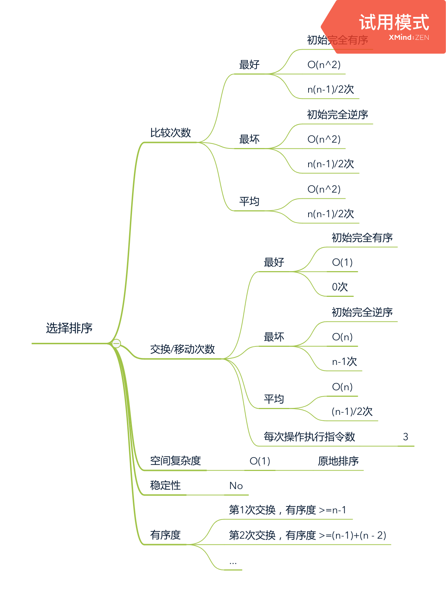

排序算法分析
执行效率：
- 最好、最坏、平均时间复杂度
- 时间复杂度的系数、常数、低阶
- 比较次数、交换（或移动）次数
空间复杂度
- 原地排序（Sorted in place）。原地排序算法，就是特指空间复杂度是 O(1) 的排序算法。
稳定性：如果待排序的序列中存在值相等的元素，经过排序之后，相等元素之间原有的先后顺序不变。
待排序数据的有序度分析
有序度：有序元素对：a[i] <= a[j]，如果 i < j 的数量
满序度：
- 完全有序的数组的有序度
- 对于长度为n的数组，满序度=n*(n-1)/2
- 举例：长度6的数组，满序度=6 * (6-1) /2=15
逆序度：逆序度 = 满序度 - 有序度
冒泡排序（Bubble sort）
算法描述：
- 操作相邻的两个数据
- 每次冒泡操作都会对相邻的两个元素进行比较，看是否满足大小关系要求。
- 如果不满足就让它俩互换。
- 一次冒泡会让至少一个元素移动到它应该在的位置，重复 n 次，就完成了 n 个数据的排序工作。
// 冒泡排序，a 表示数组，n 表示数组大小
public void bubbleSort(int[] a, int n) {
if (n <= 1) return;
for (int i = 0; i < n; ++i) {
// 提前退出冒泡循环的标志位
boolean flag = false;
for (int j = 0; j < n - i - 1; ++j) {
if (a[j] > a[j+1]) { // 交换
int tmp = a[j];
a[j] = a[j+1];
a[j+1] = tmp;
flag = true; // 表示有数据交换
}
}
if (!flag) break; // 没有数据交换，提前退出
}
}插入排序（Insertion sort）
算法描述：
- 将数组中的数据分为两个区间，已排序区间和未排序区间。初始已排序区间只有一个元素，就是数组的第一个元素。
- 取未排序区间中的元素，在已排序区间中找到合适的插入位置将其插入，并保证已排序区间数据一直有序。
- 重复这个过程，直到未排序区间中元素为空，算法结束。
// 插入排序，a 表示数组，n 表示数组大小
public void insertionSort(int[] a, int n) {
if (n <= 1) return;
for (int i = 1; i < n; ++i) {
int value = a[i];
int j = i - 1;
// 查找插入的位置
for (; j >= 0; --j) {
if (a[j] > value) {
a[j+1] = a[j]; // 数据移动
} else {
break;
}
}
a[j+1] = value; // 插入数据
}
}
选择排序（Selection sort）
算法描述：
- 同样分为已排序区间和未排序区间。
- 从未排序区间中找到最小的元素，将其放到已排序区间的末尾。第一次找最小的，第二次找第二小的，第三次找第三小的。
public void selectionSort(int[] a, int n) {
if (n <= 1) return;
for (int i = 0; i < n; i++) {
int min_i = i;
// 找到最小值的下标
for (int j = i + 1; j < n; j++) {
if (a[j] < a[min_i]) {
// 更新最小值的下标
min_i = j;
}
}
if (min_i == i) {
continue;
}
// 交换数据
int tmp = a[i];
a[i] = a[min_i];
a[min_i] = tmp;
}
}